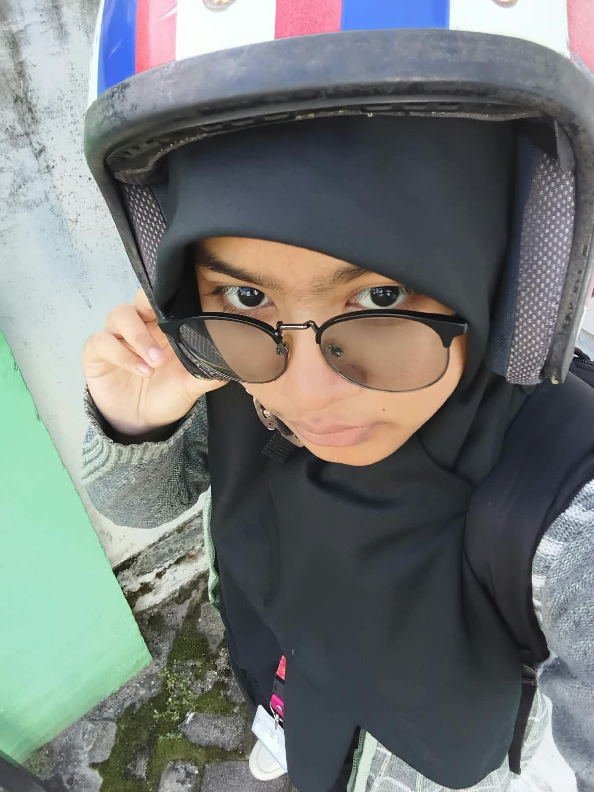

Aplikasi Kasir
Aplikasi desktop untuk mencatat transaksi penjualan, menghitung total belanja, dan menampilkan struk sederhana.
Selamat datang di portofolioku
Siswi SMKN 4 Tarakan jurusan Rekayasa Perangkat Lunak (RPL). Aku belajar membuat aplikasi dan website, sedangkan menggambar digital aku jalani sebagai hobi.

Siswi RPL SMKN 4 Tarakan & Digital Artist
Namaku Najwa Az Zahrah, aku bersekolah di SMKN 4 Tarakan dan mengambil jurusan Rekayasa Perangkat Lunak (RPL). Di jurusan ini aku belajar membuat program, mulai dari aplikasi desktop sampai website.
Sejauh ini aku sudah pernah membuat aplikasi kasir memakai Visual Basic dan web perpustakaan memakai PHP. Kalau digital art, itu hanya hobiku di waktu luang — bukan bidang utamaku.
Bahasa pemrograman dan teknologi yang aku pelajari di jurusan RPL.
Membuat program desktop, salah satunya aplikasi kasir untuk mencatat transaksi penjualan.
Membangun website dinamis yang terhubung dengan database, seperti web perpustakaan.
Merancang tabel dan mengelola data untuk kebutuhan aplikasi maupun website.
Membuat tampilan website yang rapi, menarik, dan responsif.
Dua proyek yang aku kerjakan sambil belajar di jurusan RPL.
Aplikasi desktop untuk mencatat transaksi penjualan, menghitung total belanja, dan menampilkan struk sederhana.
Website untuk mengelola data buku dan anggota, serta mencatat peminjaman dan pengembalian buku.
Digital art adalah hobiku — menggambar dan berkreasi secara digital di waktu luang. Ini beberapa contohnya.
Punya pertanyaan atau ingin bekerja sama? Kirim pesan atau hubungi aku lewat media berikut.